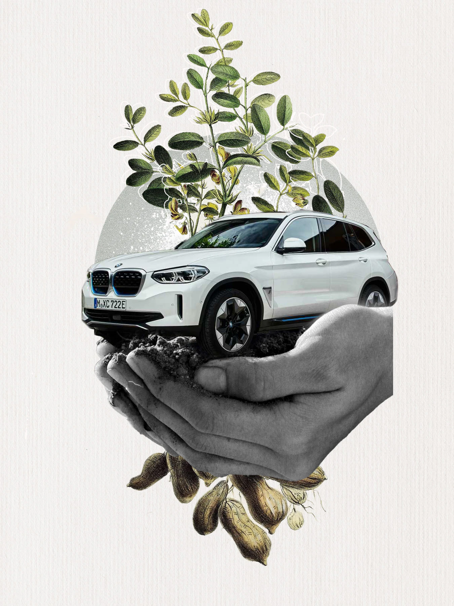

How BMW Cars Are Made
BMW's manufacturing process is a blend of precision, innovation, and sustainability.
Precision Engineering
Every BMW vehicle is crafted with meticulous attention to detail. Advanced robotics and skilled engineers work together to ensure perfection in every component.
Cutting-Edge Technology
BMW's factories utilize state-of-the-art technology to automate repetitive tasks while maintaining high standards of quality. Human expertise ensures the final touch of perfection.

Sustainability
BMW is committed to reducing its environmental impact. From energy-efficient factories to recyclable materials, BMW leads the way in sustainable automotive manufacturing.